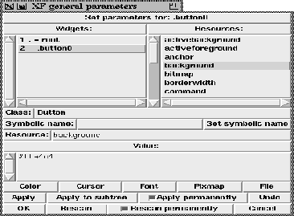

This procedure gives access to the general parameter dialog. XF supports a subset of widget resources with XF specific dialog boxes. This only covers the most frequently used resources. Special resources can be accessed with this dialog box.

Figure: The procedure XFProcConfParametersGeneral
The upper left list shows all widgets in the application. To change the current widget, the user clicks on the widget name. The right list shows the names of all available resources for the current widget.
Below these lists, the class of the selected widget is displayed. The symbolic name is shown as well and can be manipulated. The resource field contains the name of the currently selected resource, and the text field at the bottom shows the value of the resource.
A number of buttons at the bottom provides access to some dialog boxes, where values for standard resources (like colors) can be interactively selected. The remaining buttons at the bottom are used for setting the resources for the current widget (or for all descendants of the current widget), and for terminating the dialog box.